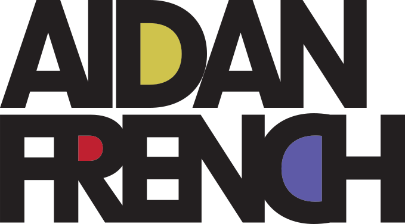
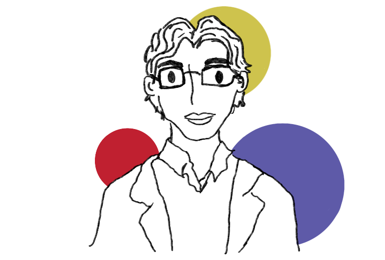

I am a designer whose practice is rooted in observation, research, and critical inquiry. I am interested in the ways visual culture shapes our understanding of the world, and how images, objects, and systems of communication influence what we remember, value, and believe. Rather than viewing design as a neutral tool for delivering information, I approach it as a cultural practice that actively participates in the construction of meaning.
My work often draws from archives, material histories, and everyday forms, using design as a means of investigating relationships between people, institutions, and the structures that organize contemporary life. Working across print and digital media, I am interested in projects that invite reflection, uncover hidden narratives, and examine the social and symbolic dimensions of communication.
Download My Resume